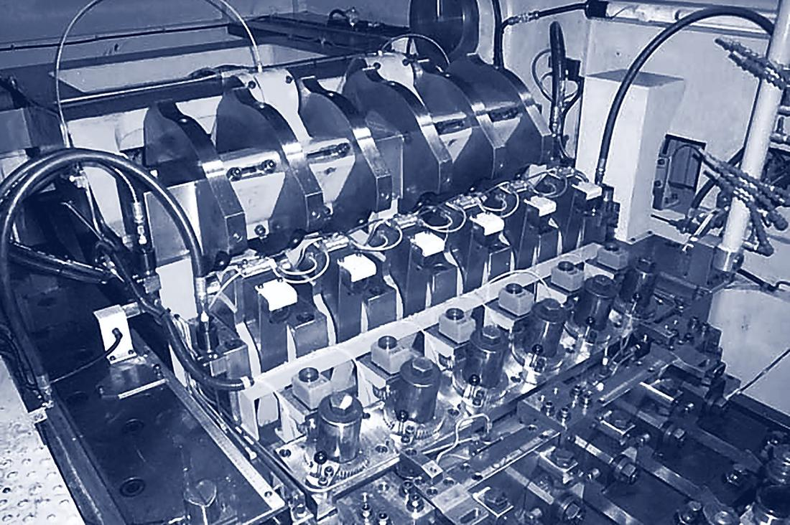

Jern Yao izdeluje večstopenjske stiskalnice, ki zmorejo oboje: natančnost velikih imen in ceno, ki se obrestuje v ceni kosa. Po tem načelu dela več kot 5.300 strojev v več kot 40 državah; obdelava komponent, montaža in elektrika nastajajo v celoti v lastni tovarni v Tainanu.
Hrbtenico tvorijo stiskalnice za vijake JBF, ki so v tri- in štiristopenjski izvedbi zrasle kot odgovor na ameriški Boltmaker: stroji za vsakdanji kruh vijačarn. Vrh predstavljajo dolgohodne stiskalnice JBP in kratkohodne JNP z do sedmimi stopnjami in 930 tonami sile stiskanja, grajene za zahtevne preoblikovance.
Za nemško govoreči trg zastopa tovarno ekskluzivno Hans Moehling: svetovanje, projektiranje, nadomestni deli in tehnična pojasnila, po neposrednem kanalu v Tainan.
Od dvostopenjskega surovca vijaka do sedemstopenjskega preoblikovanca: vsaka serija pokriva svoje področje v fino stopnjevanih velikostih strojev, dosledno metrično projektirano.
| Serija | Stopnje | Premer odreza | Področje | Hodi |
|---|---|---|---|---|
| JBFBolt Formers | 2–6 | 3–42 mm | M3–M30, dolžina odreza do 480 mm | do 300 min−1 |
| JBP · JNP · JPFParts Formers | 5–7 | 7–45 mm | Dolžina odreza do 450 mm, sila stiskanja do 930 t | do 320 min−1 |
| JNF · JNL · JNFP · JNFRNut Formers | 5–6 | 8–46 mm | M3–M33, tudi long-stroke izvedbe | do 450 min−1 |
Projektiranje in ponudba, tehnična pojasnila brez ovinkov: povpraševanja gredo od tod neposredno v konstrukcijo v Tainan, odgovori se vračajo preverjeni. Nadomestni deli in servisni primeri tečejo po isti poti, usklajeno iz ene roke. Mandat velja nemškemu govornemu prostoru; kdor pot sem najde od drugod, zato ne bo odslovljen.
Povezava sega v leto 1982: Moehling je te stroje, takrat še pod imenom Tung Kuang, pripeljal v Evropo in spremljal njihovo pot do današnje zrelosti. To delo se tu nadaljuje.